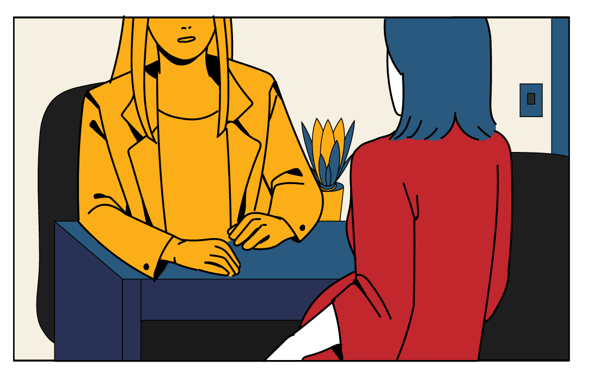
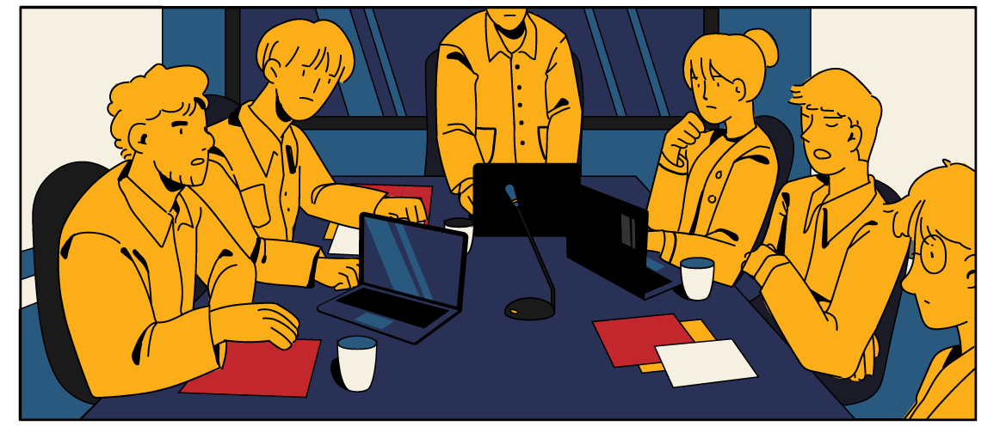
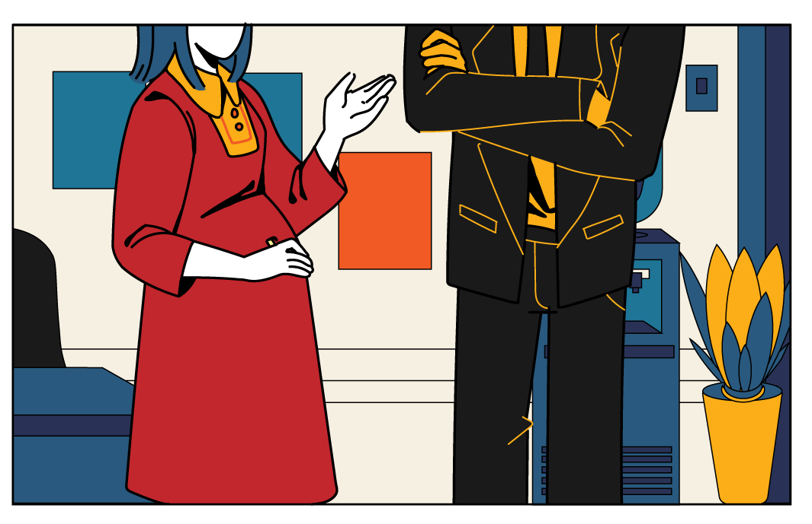
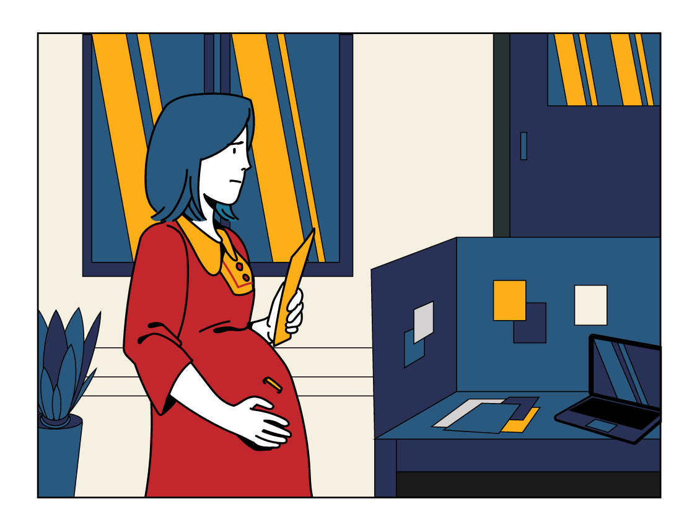
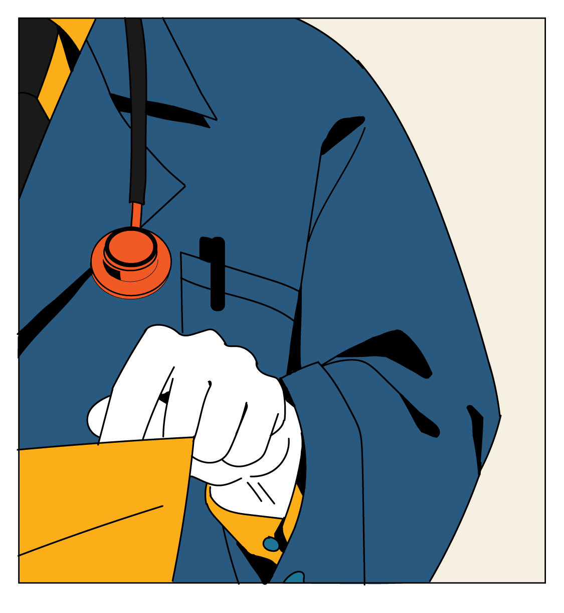

ฉันเป็นหัวหน้าแผนกของบริษัทแห่งหนึ่ง
หลังจากแต่งงานได้ปีกว่า
ฉันก็ท้อง
ถึงแม้จะลาคลอดได้ก็ตาม
แต่งานก็ยังคงรั้งฉันไว้อยู่
แค่เรื่องงานก็เครียดมากพอแล้ว
ยังจะต้องมาเจอเพื่อนร่วมงาน
ที่ไม่เคยจะเข้าใจอะไรอีก
เออนี่ แล้วสรุปเธอจะลาหรือเปล่า?

ฉันเข้าใจเธอนะ แต่มันก็เดือดร้อนต่อ
เพื่อนร่วมทีมของเธอจริง ๆ ที่จะต้อง
มารับภาระงานแทนเธอ ตั้ง 3 เดือน
เป็นคนท้องนี่มันดีจังเลยนะ
ลาหายแล้วโยนงานให้คนอื่นได้ด้วย
ฉันเข้ามาในห้องประชุม
ที่มีลูกน้องนั่งคุยรอเวลา
เห็นว่าพี่เขา
จะลาคลอดนะ
เห็นว่าพี่เขา
จะลาคลอดนะ
ภาระงาน
พวกเรา
ก็จะหนักขึ้นสิงี้

เป็นเฮดงาน
ซะเปล่า
เสียงาน
เสียการ
กันพอดี
ซึ่งก็ไม่พ้นคำนินทา
เกี่ยวกับเรื่องของฉันเอง
ฉันเข้ามาในห้องประชุม
ที่มีลูกน้องนั่งคุยรอเวลา
บางทีการปรึกษาหัวหน้า
อาจจะทำให้หาทางออกได้

แต่กลับกลายเป็นว่า
ฉันไม่ได้คำปรึกษาที่ดีกลับมาเลย
คุณจะบอกให้ผมหาคนมาแทน ?
โดยที่บริษัทเรายังต้องจ่ายเงินให้
คุณทุกเดือน ทั้ง ๆ ที่คุณจะไม่
มาทำงานตั้ง 3 เดือนเหรอ ?
ยังไงซะการลาไม่ลา
ก็ต้องเป็นฉันเองที่ต้องตัดสินใจ
คำด่า
คำด่า
คำด่า

คำด่า
คำด่า
อยู่ในมือหมอฉันคิดว่า
จะสบายใจขึ้นไปบ้าง
คุณแม่มีภาวะ
ครรภ์เป็นพิษ
นะครับ

ควรที่จะลดความเครียด
หรือพักผ่อนให้เพียงพอ
หรือถ้าทางที่ดีควรจะอยู่ใน
ความดูแลของแพทย์ก่อนจะคลอดครับ
ทางออกเดียวของฉันตอนนี้
ก็คงต้องเป็นการ
“ลาออก”
ถึงจะรู้สึกผิด
แต่สิ่งสำคัญสำหรับฉันตอนนี้
คือ
ลูก
และ ชีวิต
ของฉันเอง